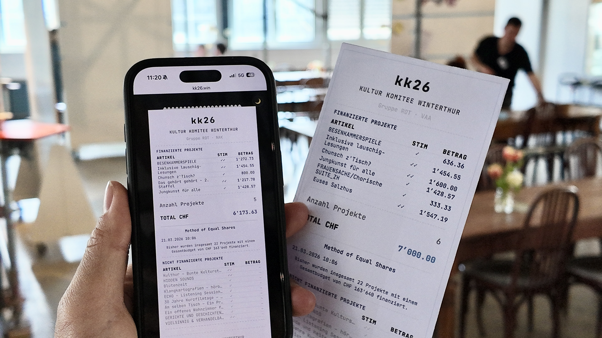

Info
Diese Seite dokumentiert die Abstimmung des Kultur Komitees Winterthur 2026 und macht nachvollziehbar, wie die Method of Equal Shares aus Stimmen, Projektkosten und verfügbaren Budgets ein Ergebnis berechnet.
Was Sie sehen
Die persönlichen Quittungen zeigen, welche Projekte durch eine Person mitfinanziert wurden. Die Projekt-Quittungen zeigen die Perspektive jedes Projekts: Unterstützung, Beiträge, Kosten und MES-Status. Die Outcome-Tabelle fasst alle Projekte pro Gruppe in einer kompakten Rangliste zusammen.
Methode
Die Wähler:innen-Quittung ist eine gestalterische Innovation: Sie nutzt die Bepreisbarkeit der Method of Equal Shares, um sichtbar zu machen, wie einzelne Stimmen in Beiträge übersetzt werden und dadurch ein kollektives Ergebnis erklärbar wird.
Die Method of Equal Shares verteilt ein gemeinsames Budget so, dass jede teilnehmende Person rechnerisch den gleichen Anteil am Budget erhält. Projekte werden nur dann finanziert, wenn ihre Unterstützer:innen zum Prüfzeitpunkt gemeinsam genug verbleibendes Budget haben.
- Ja-Stimmen erzeugen mehr Unterstützung als Eher-Ja-Stimmen.
- Teurere Projekte benötigen entsprechend breitere Unterstützung.
- Das Verfahren stoppt, wenn kein weiteres Projekt finanzierbar ist.
Kultur Komitee 2026
Im März 2026 haben 23 Teilnehmende in drei Gruppen über die Vergabe von insgesamt 161'000 CHF an Kulturprojekte in Winterthur abgestimmt. Für die MES-Berechnung wurden die positiven Bewertungen berücksichtigt: Eher Ja zählte als ein Punkt, Ja als zwei Punkte.

Am Entscheidungstag nutzte das Komitee die Wähler:innen-Quittungen als gemeinsame Lesehilfe. Die Quittungen machten sichtbar, welche Projekte durch das Verfahren bereits finanzierbar waren, welche Projekte knapp scheiterten und wo persönliche Budgets schon ausgeschöpft waren.
So ersetzte die Berechnung nicht die Diskussion, sondern strukturierte sie: Einfache Fälle konnten schneller verstanden werden, während die Gruppe ihre Zeit auf Projekte richten konnte, bei denen noch Klärung, Abwägung oder Verhandlung nötig war.
Was die Rückmeldungen zeigen
Im Vergleich zu 2025 nahmen 2026 deutlich mehr Teilnehmende ihren Einfluss in Einzelabstimmung und Gruppendiskussion als gleichwertig wahr: Der Anteil stieg von 34.4% auf 62.5%. Gleichzeitig sank der Anteil der Personen, die der Gruppendiskussion mehr Einfluss zuschrieben, von 40.6% auf 18.8%. Das deutet darauf hin, dass die Quittungen – neben anderen Änderungen – den eigenen Beitrag konkreter und nachvollziehbarer gemacht haben könnten.
Gleichzeitig wurde Gruppendiskussion nicht weniger wichtig. Im Gegenteil: Der Anteil der Personen, die mehr als die Hälfte des Entscheidungsgewichts bei der Gruppe sehen möchten, stieg von 21.9% im Jahr 2025 auf 62.5% im Jahr 2026. Die Rückmeldungen zeigen also beides: ein stärkeres Gefühl von gleichem Einfluss und eine grössere Wertschätzung gemeinsamer Diskussion.
Hintergrund
Die Method of Equal Shares (MES) wurde im Kontext von partizipativen Budgets entwickelt. Sie sorgt dafür, dass nicht einfach die Mehrheit gewinnt, sondern alle Beteiligten möglichst gleich viel Einfluss auf das Ergebnis haben. Zudem werden in der Entscheidung auch die Kosten berücksichtigt: Je höher ein angefragter Betrag, desto mehr Zustimmung benötigt ein Projekt.
JOSHUA C. YANG ist Postdoktorand an der ETH Zürich. Er forscht zu der Frage, wie digitale Werkzeuge und KI demokratische Prozesse unterstützen können. Gemeinsam mit Fynn Bachmann (UZH) hat er die Entscheidungsprozesse des Kultur Komitees von 2024 – 2026 begleitet.
Datenschutz
Die Namen der Komiteemitglieder wurden pseudonymisiert. Projektnamen wurden durch fiktive Bezeichnungen ersetzt. Die Darstellung soll Transparenz über das Verfahren schaffen, ohne personenbezogene Abstimmungsdaten offenzulegen.